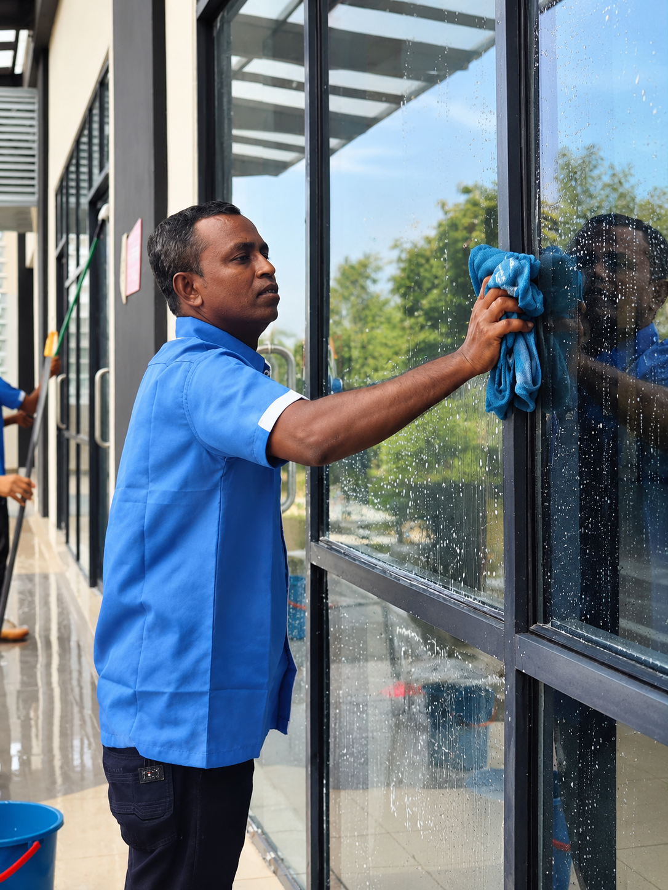
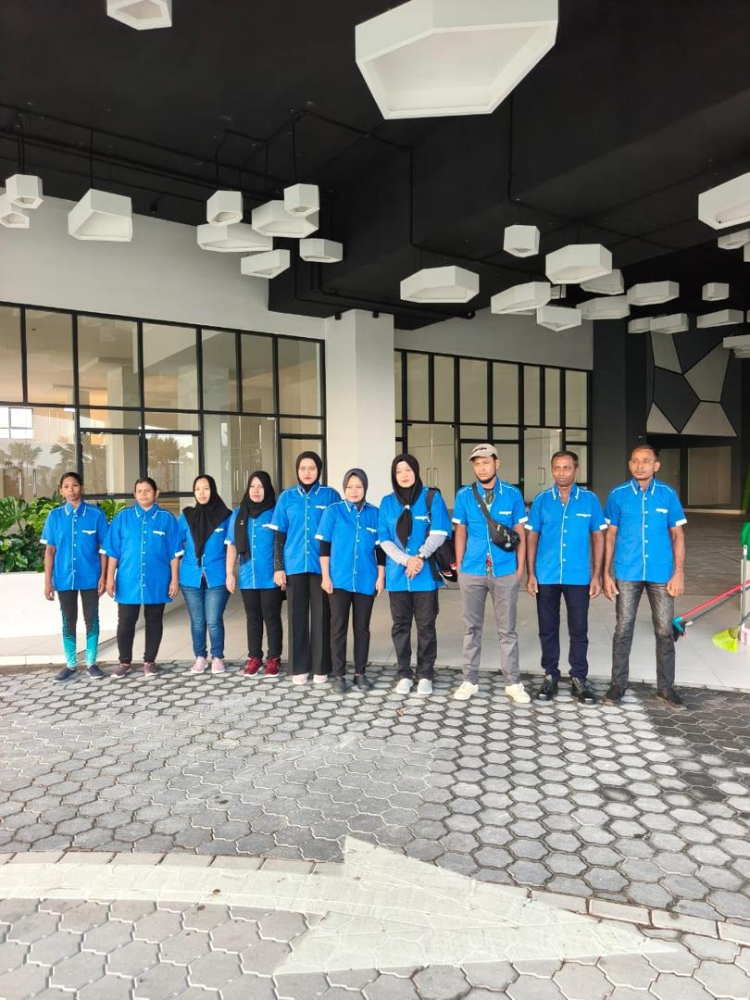

SS
Managing Director
Siti Sharmila
Leads the company's day-to-day operations and oversees service standards across every contract.
Cleaning & Landscaping services in Selangor
About Us
City Shine Cleaning Services was founded in 2004 by two people with backgrounds in the cleaning industry and in management. We started with a modest amount of capital and have grown since, adding landscaping services in 2020 to support the same clients on their grounds as well as their buildings.
We work mainly on monthly contracts, taking on the day-to-day cleaning of factories, offices, condominiums and other commercial properties, along with post-construction cleaning for new buildings. Our clients range from small offices to large industrial sites.

Cleaner spaces,
greener grounds,
built together.
Our Founder
Every contract we hold today traces back to one bicycle: a husband who pedalled, a wife who cleaned, and a handful of small offices.
Sundra started out cleaning small offices, with her husband cycling her from one office to the next each day. Program Electronic was among her very first clients, and it is still a name we are proud to work with.
She partnered with our current Managing Director to turn that hard work into an officially registered company, and named it City Shine Cleaning Services.
The company took on its own cleaning crews and grew from small offices to contract cleaning for larger offices and factories, and then to contractual cleaning at condominiums.
We added landscaping, so the same clients could have one trusted team looking after their grounds as well as their buildings.
What began with one bicycle carrying her between offices is now a full contractual cleaning and landscaping company, with trained crews and supervisors on sites across Selangor.
Passion & commitment is what transforms a promise into reality.
Our motto since day one
What We Stand For
To be a reliable and caring company, building the trust that comes from doing the job properly every time.
To provide efficient, committed cleaning and landscaping services to every client, striving for a cleaner environment.
Quality is not an act, it is a habit. Passion and commitment is what transforms a promise into reality.
Our Team
A small, hands-on management team overseeing every contract, backed by trained supervisors and crew on the ground.
Leads the company's day-to-day operations and oversees service standards across every contract.
Coordinates site teams and schedules to keep every contract running smoothly.
Handles client relationships and new business for CSC Services.
Manages day-to-day administration and office operations.
Supports the office with day-to-day paperwork, records and client coordination.
Looks after the company's accounts, billing and payments.
Reviews the company's accounts and financial records.
Leads our crews on site and checks the work against the agreed scope.

Who We Are
What began in the 1990s with one cleaner and a bicycle, and became a registered company in 2004, is now a full cleaning and landscaping team. We supply the trained crew, the on-site supervision and the equipment, so the daily upkeep of your property is handled from start to finish.
Over 20 years of continuous service and growth.
Experienced staff and dedicated supervisors on every site.
Offices, condominiums, factories and more.
One trusted partner for the whole property.